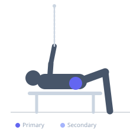

Exercise guide / Side-Lying Hip Abduction
Side-Lying Hip Abduction
Side-lying hip abduction is performed lying on one side and raising the top leg toward the ceiling with a straight knee, working the hip abductors through a longer lever than the clamshell. The gluteus medius and tensor fasciae latae are the primary movers, and the exercise is a staple of both rehabilitation programs and general glute training. A resistance band above the ankles or a cable at the ankle increases the load.
Primary muscles
gluteus medius
tensor fasciae latae
Secondary muscles
gluteus minimus
Stabilizers
erector spinae
transverse abdominis
Equipment
No Equipment (Bodyweight)
Optional
Resistance Band (Loop / Mini Band)


Starting position
- Lie on one side with hips stacked and legs straight. Bottom arm extended under the head. Body in a straight line.
Setup
- Use bodyweight or add a mini loop band above the ankles for added resistance.
Steps
- Step 1: Lie on your side with hips stacked, legs extended, body in a straight line.
- Step 2: With the top leg straight and toes pointing slightly downward, raise the leg toward the ceiling by abducting the hip.
- Step 3: Raise until 45–60° of abduction or until the pelvis begins to tilt.
- Step 4: Hold briefly at the top, then lower under control.
- Step 5: Complete all reps on one side then switch.
Coaching cues
- Toes slightly down — not up
- Keep hips stacked — don't roll
- Raise with the outer hip, not the lower back
Breathing
- Exhale as you raise the leg. Inhale as you lower.
Range of motion
- Raise the leg to about 45–60°. Stop before the pelvis tilts.
Tempo
- 2-1-2-0
Common mistakes
- Rolling the pelvis forward or back — keep hips stacked vertically
- Internally rotating the hip (toes pointing up) — slight external rotation keeps glute medius engaged
- Using momentum — the movement should be slow and controlled
Safety
- Very low-risk exercise suitable for beginners and rehabilitation
- Avoid if the exercise reproduces hip or groin pain
Training
- hypertrophy: 15–25 reps
- endurance: 20–30 reps
- hypertrophy: 2–3 sets
- endurance: 2–3 sets
- Rest: {'hypertrophy': 45, 'endurance': 30}